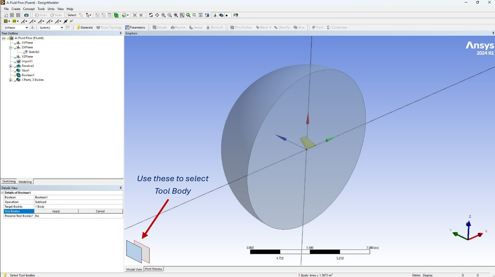
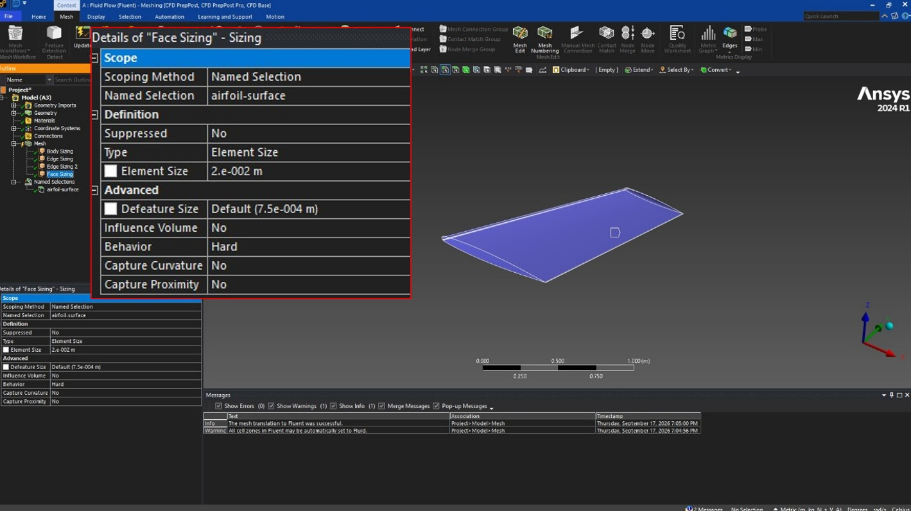
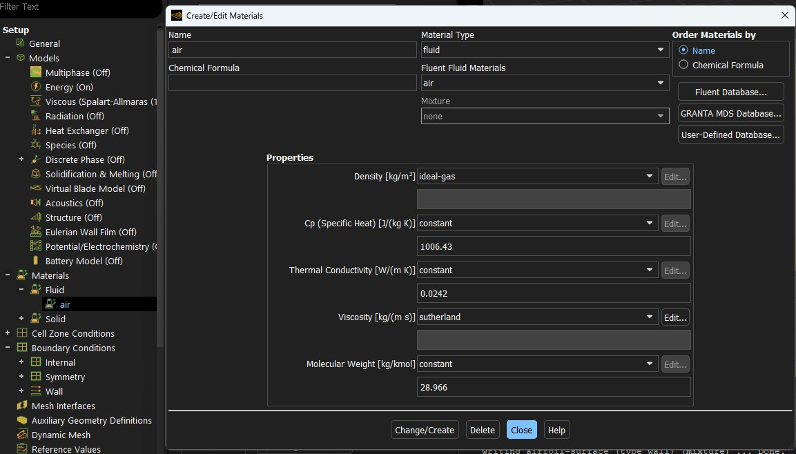
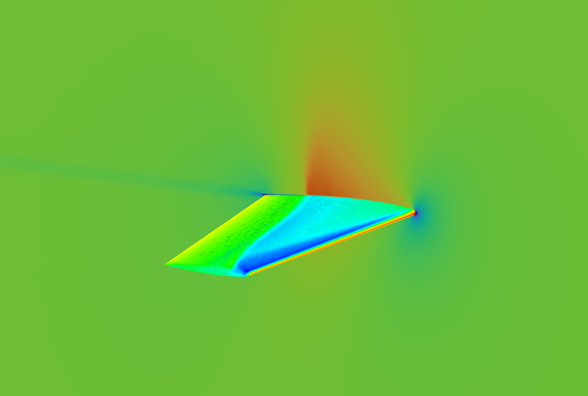

A Structured Manual on 3D CFD Simulation of ONERA M6 Wing at Transonic Cruise Conditions (Mach 0.84)
Capturing the behavior of a 3D wing at transonic speed can be tricky, partly because of the sheer amount of 'mathematics' involved underneath, but also partly this regime of flow is genuinely unstable. Shockwave and all, not to mention resolving boundary layers properly at such high Reynolds Number - yes, it gets messy. Add some Angle of Attack to the mix, and we have something very interesting, albeit slightly more 'difficult' than a 2D simulation problem to deal with. But of course, one must understand such constraints, fluid behavior, and work around them to make sure their design holds under violent aerodynamic conditions. I mean, that's what 'trying to be an aerodynamicist' means anyways, eh? Lucky for us however, this flow condition is one of the most studied subject matters with numerous literatures. Specifically, for the design choice of this instruction - ONERA M6 wing. It is a transonic wing with a supercritical airfoil profile - and the geometry is readily available thanks to the good people at ONERA and NASA. In addition, there are entire database for the exact flow condition, for the exact wing model - both analytical and experimental. So, there is a ground based on which we can evaluate how 'wrong' our study might be! Problem is, despite all the literatures, turbulence model database, and numerous graphs being available - there is little to no instructions on how to actually do the analysis by your own, in your own 'potato' PC (when it comes to 3D CFD, even the latest and greatest consumer-grade PCs are still potatoes), without being involved with a lab or something like that. To my understanding, there are some manuals (case-specific) on various aerodynamic analysis - but for the most part they are extremely 'gated', meaning they are only available to people involved in said labs, or departments. So, there is a gap between learning a canonical example of an aerodynamic analysis of a transonic 3D wing, and a 'hobbyist' trying to learn transonic CFD on their own. This is an attempt to bridge the gap. When I first learned about the 3D transonic analysis, I faced so many pitfalls (don't ask me about generating a structured mesh), so many errors, so many 'Computer Says No' moments. I logged most of them, and I thought - these logs could help (with some narrative 'story-telling') someone who wants to learn about transonic aerodynamic analysis. Students, educators, researchers, and of course; my future-self who will surely forget 97.5% of what he learned back in the day. The choice of solver for this project is ANSYS Fluent. I tried to be as thorough, and as detailed as possible in the making of the instruction. Since under the hood, the whole thing is just a giant math equation(s), one minor detail deviated WILL force the solver to throw tantrums in order of magnitudes that might just question your sanity. Don't ask me how I know that!




Captivated yet!? Please consult the full instruction manual linked at the end of the page. Additionally, you can also find useful citations and references linked below. I hope this instruction will help you, just like I hope it will help me in 3 months when I will forget what a 'farfield' is!
+ Geometry: ONERA M6
+ Root Chord: 0.81m
+ Fluid Velocity: Mach 0.84
+ Angle of Attack: 3.06°
+ Reynold's Number: 14.6 million
+ Domain: Riemann Hemisphere
+ Inlet Type: Pressure Farfield
+ Operating Pressure: 0 Pa
+ Gauge Pressure: 97913.3 Pa
+ Equation: Spalart-Allmaras
● Theory Overview
● Geometry Clean Up:
● Fluid Domain & Meshing:
● Solver Setup:
If you follow the instruction properly, I hope the data you generate will be around a 'respectable' ballpark of the actual, literature-backed
numbers. Good luck, chances are you are going to need it.
Godspeed, fellow aerodynamicist in the making!
© 2026 Omar Saif · All Rights Reserved | Powered by Caffeine ☕